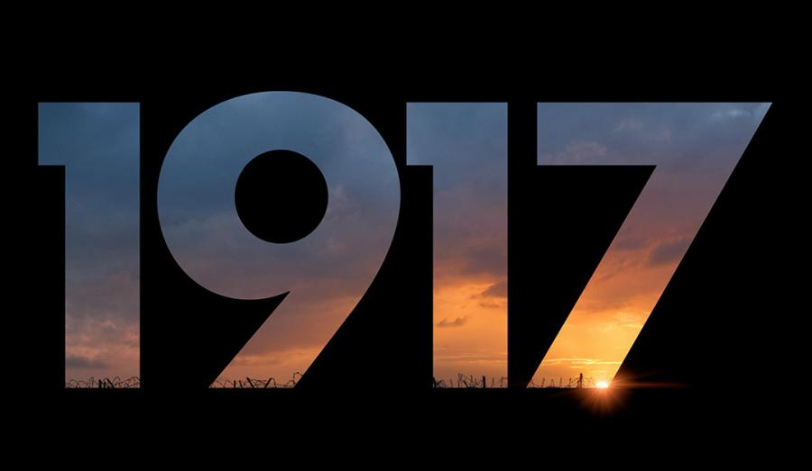

Por mais que a Primeira Guerra Mundial tenha terminado há mais de 100 anos, ainda hoje existem diversos materiais capturados por câmeras que jamais foram liberados ao público. Junto a uma equipe de pesquisadores e restauradores, o cineasta Peter Jackson reuniu vídeos e trechos extremamente impactantes e fez uma remontagem através da perspectiva cronológica dos detalhes mais sórdidos e intimistas da época.
Onde assistir: Hbo MaxPrimeira Guerra Mundial
Resumo
A Primeira Guerra Mundial foi um marco na história da humanidade. Foi a primeira guerra do século XX e o primeiro conflito em estado de guerra total – aquele em que uma nação mobiliza todos os seus recursos para viabilizar o combate. Estendeu-se de 1914 a 1918 e foi resultado das transformações que aconteciam na Europa, as quais fizeram diferentes nações entrar em choque. O resultado da Primeira Guerra Mundial foi um trauma drástico. Uma geração de jovens cresceu traumatizada com os horrores da guerra. A frente de batalha, sobretudo a Ocidental, ficou marcada pela carnificina vivida nas trincheiras e um saldo de 10 milhões de mortos. Os desacertos da Primeira Guerra Mundial contribuíram para que, em 1939, uma nova guerra acontecesse.
Causas
As causas da Primeira Guerra Mundial são extremamente complexas e envolvem uma série de acontecimentos não resolvidos que se arrastavam desde o século XIX: rivalidades econômicas, tensões nacionalistas, alianças militares etc. De maneira geral, os principais fatores que contribuíram para o início da Primeira Guerra Mundial foram:
disputas imperialistas;
nacionalismos;
alianças militares;
corrida armamentistas.
Na questão imperialista, o enfoque pode ser dado ao temor que a ascensão da Alemanha gerou em nações como Rússia, França e Grã-Bretanha. Os alemães haviam passado pelo processo de unificação na segunda metade do século XIX e, após isso, lançaram-se à busca de colônias para seu país. Isso prontamente chamou a atenção da França, por exemplo, que via seus interesses serem prejudicados com o fortalecimento alemão.
A questão dos nacionalismos envolveu diferentes nações. A Alemanha encabeçava um movimento conhecido como pangermanismo. Esse movimento nacionalista servia como suporte ideológico para o Império Alemão defender os seus interesses de expansão territorial no começo do século XX. O pangermanismo ainda se expressava nas questões econômicas, pois os alemães pretendiam colocar-se como a força econômica e militar hegemônica da Europa.
Na questão nacionalista, havia também o revanchismo francês. Essa questão envolvia os ressentimentos que existiam na França a respeito do desfecho da Guerra Franco-Prussiana, conflito travado entre Prússia e França em 1870 e 1871. A derrota francesa foi considerada humilhante, principalmente por dois fatores: a rendição ter sido assinada na Galeria dos Espelhos, no Palácio de Versalhes, e pela perda da Alsácia-Lorena. Após o fim desse conflito, a Prússia autoproclamou-se como Império Alemão.
A questão nacionalista mais complexa envolvia os Bálcãs, região no sudeste do continente europeu. No começo do século XX, os Bálcãs eram quase inteiramente dominados pelo Império Áustro-Húngaro, que estava em ruínas por causa da multiplicidade de nacionalidades e movimentos separatistas que existiam em seu território.
A grande tensão nos Bálcãs envolvia a Sérvia e a Áustria-Hungria na questão referente ao controle da Bósnia. Os sérvios lutavam pela formação da Grande Sérvia e, por isso, desejavam anexar a Bósnia ao seu território (a Bósnia era parte da Áustria-Hungria desde 1908 oficialmente). Esse movimento nacionalista de sérvios era apoiado pela Rússia por meio do pan-eslavismo, ideal em que todos os eslavos estariam unidos em uma nação liderada pelo czar russo.
Tendo em vista todo esse quadro de tensão e rivalidades, as nações europeias meteram-se em um labirinto de alianças militares, que acabou sendo definido da seguinte maneira:
Tríplice Entente: formada por Rússia, Grã-Bretanha e França.
Tríplice Aliança: formada por Alemanha, Áustria-Hungria, Império Otomano e Itália.
O que faltava para que a guerra tivesse início era um estopim, que aconteceu em 28 de junho de 1914, durante a visita do arquiduque Francisco Ferdinando, herdeiro do trono austríaco, a Sarajevo, capital da Bósnia. A visita do arquiduque foi entendida como uma provocação e colocou em movimento os grupos nacionalistas que existiam na Sérvia e Bósnia.
Gavrilo Princip sendo preso após cometer o atentado que causou a morte de Francisco Ferdinando.
O resultado da visita do arquiduque foi que Gavrilo Princip, membro de um movimento nacionalista bósnio, armado de um revólver, meteu-se à frente do carro que levava Francisco Ferdinando e sua esposa, Sofia. Ele abriu fogo, assassinando ambos. A consequência direta do ato foi uma crise política gravíssima que ficou conhecida como Crise de Julho.
Como não houve saída diplomática para a Crise de Julho, a consequência final foram declarações de guerra acontecendo em cadeia. Em 29 de julho, a Áustria declarou guerra à Sérvia; no dia 30, russos (em defesa da Sérvia), alemães e austríacos mobilizaram seus exércitos. Em 1º de agosto, a Alemanha declarou guerra à Rússia e, no dia 3, à França. No dia 4, o Reino Unido declarou guerra à Alemanha. Era o começo da Primeira Guerra Mundial.
disputas imperialistas;
nacionalismos;
alianças militares;
corrida armamentistas.
Na questão imperialista, o enfoque pode ser dado ao temor que a ascensão da Alemanha gerou em nações como Rússia, França e Grã-Bretanha. Os alemães haviam passado pelo processo de unificação na segunda metade do século XIX e, após isso, lançaram-se à busca de colônias para seu país. Isso prontamente chamou a atenção da França, por exemplo, que via seus interesses serem prejudicados com o fortalecimento alemão.
A questão dos nacionalismos envolveu diferentes nações. A Alemanha encabeçava um movimento conhecido como pangermanismo. Esse movimento nacionalista servia como suporte ideológico para o Império Alemão defender os seus interesses de expansão territorial no começo do século XX. O pangermanismo ainda se expressava nas questões econômicas, pois os alemães pretendiam colocar-se como a força econômica e militar hegemônica da Europa.
Na questão nacionalista, havia também o revanchismo francês. Essa questão envolvia os ressentimentos que existiam na França a respeito do desfecho da Guerra Franco-Prussiana, conflito travado entre Prússia e França em 1870 e 1871. A derrota francesa foi considerada humilhante, principalmente por dois fatores: a rendição ter sido assinada na Galeria dos Espelhos, no Palácio de Versalhes, e pela perda da Alsácia-Lorena. Após o fim desse conflito, a Prússia autoproclamou-se como Império Alemão.
A questão nacionalista mais complexa envolvia os Bálcãs, região no sudeste do continente europeu. No começo do século XX, os Bálcãs eram quase inteiramente dominados pelo Império Áustro-Húngaro, que estava em ruínas por causa da multiplicidade de nacionalidades e movimentos separatistas que existiam em seu território.
A grande tensão nos Bálcãs envolvia a Sérvia e a Áustria-Hungria na questão referente ao controle da Bósnia. Os sérvios lutavam pela formação da Grande Sérvia e, por isso, desejavam anexar a Bósnia ao seu território (a Bósnia era parte da Áustria-Hungria desde 1908 oficialmente). Esse movimento nacionalista de sérvios era apoiado pela Rússia por meio do pan-eslavismo, ideal em que todos os eslavos estariam unidos em uma nação liderada pelo czar russo.
Tendo em vista todo esse quadro de tensão e rivalidades, as nações europeias meteram-se em um labirinto de alianças militares, que acabou sendo definido da seguinte maneira:
Tríplice Entente: formada por Rússia, Grã-Bretanha e França.
Tríplice Aliança: formada por Alemanha, Áustria-Hungria, Império Otomano e Itália.
O que faltava para que a guerra tivesse início era um estopim, que aconteceu em 28 de junho de 1914, durante a visita do arquiduque Francisco Ferdinando, herdeiro do trono austríaco, a Sarajevo, capital da Bósnia. A visita do arquiduque foi entendida como uma provocação e colocou em movimento os grupos nacionalistas que existiam na Sérvia e Bósnia.
Gavrilo Princip sendo preso após cometer o atentado que causou a morte de Francisco Ferdinando.
O resultado da visita do arquiduque foi que Gavrilo Princip, membro de um movimento nacionalista bósnio, armado de um revólver, meteu-se à frente do carro que levava Francisco Ferdinando e sua esposa, Sofia. Ele abriu fogo, assassinando ambos. A consequência direta do ato foi uma crise política gravíssima que ficou conhecida como Crise de Julho.
Como não houve saída diplomática para a Crise de Julho, a consequência final foram declarações de guerra acontecendo em cadeia. Em 29 de julho, a Áustria declarou guerra à Sérvia; no dia 30, russos (em defesa da Sérvia), alemães e austríacos mobilizaram seus exércitos. Em 1º de agosto, a Alemanha declarou guerra à Rússia e, no dia 3, à França. No dia 4, o Reino Unido declarou guerra à Alemanha. Era o começo da Primeira Guerra Mundial.
Tríplice Entente: formada por Rússia, Grã-Bretanha e França.
Tríplice Aliança: formada por Alemanha, Áustria-Hungria, Império Otomano e Itália.
O que faltava para que a guerra tivesse início era um estopim, que aconteceu em 28 de junho de 1914, durante a visita do arquiduque Francisco Ferdinando, herdeiro do trono austríaco, a Sarajevo, capital da Bósnia. A visita do arquiduque foi entendida como uma provocação e colocou em movimento os grupos nacionalistas que existiam na Sérvia e Bósnia.
Gavrilo Princip sendo preso após cometer o atentado que causou a morte de Francisco Ferdinando.
O resultado da visita do arquiduque foi que Gavrilo Princip, membro de um movimento nacionalista bósnio, armado de um revólver, meteu-se à frente do carro que levava Francisco Ferdinando e sua esposa, Sofia. Ele abriu fogo, assassinando ambos. A consequência direta do ato foi uma crise política gravíssima que ficou conhecida como Crise de Julho.
Como não houve saída diplomática para a Crise de Julho, a consequência final foram declarações de guerra acontecendo em cadeia. Em 29 de julho, a Áustria declarou guerra à Sérvia; no dia 30, russos (em defesa da Sérvia), alemães e austríacos mobilizaram seus exércitos. Em 1º de agosto, a Alemanha declarou guerra à Rússia e, no dia 3, à França. No dia 4, o Reino Unido declarou guerra à Alemanha. Era o começo da Primeira Guerra Mundial.
Países envolvidos
Como mencionado no texto, os dois grupos que lutaram entre si na Primeira Guerra Mundial ficaram conhecidos como Tríplice Aliança (as principais forças eram a Alemanha, Áustria-Hungria, Império Otomano e Itália) e Tríplice Entente (as principais forças eram a Rússia, Grã-Bretanha e França). No caso da Itália, o país fazia parte da Tríplice Aliança, mas recusou-se a participar da guerra quando ela se iniciou. Em 1915, a Itália aderiu à Tríplice Entente. Naturalmente, a Primeira Guerra Mundial não se resumiu ao envolvimento desses países, pois diversas outras nações envolveram-se no conflito. No lado da Entente, países como Grécia, Estados Unidos, Canadá, Japão e até mesmo o Brasil entraram no confronto. No lado da Tríplice Aliança, houve a participação da Bulgária e de outros povos e Estados clientes, como o Sultanato de Darfur.

Onde ocorreu
Os combates da Primeira Guerra Mundial, em sua maioria, aconteceram no continente europeu. Na Europa, destacaram-se a Frente Ocidental, em que os alemães lutaram contra franceses e britânicos, e a Frente Oriental, em que os alemães lutaram contra sérvios e russos. Durante a guerra, houve também batalhas no Oriente Médio, isto é, nas regiões que estavam sob domínio do Império Otomano.

Fases
Utilizando a classificação do estudioso Luiz de Alencar Araripe, a Primeira Guerra Mundial pode ser dividida em duas grandes fases. A primeira fase ficou conhecida como Guerra de Movimento e aconteceu entre agosto e novembro de 1914. A segunda fase ficou conhecida como Guerra de Trincheiras e ocorreu entre 1915 e 1918.
Da primeira fase da guerra, destacou-se o plano alemão de invasão da França pelo território belga, o chamado Plano Schlieffen. Esse plano foi elaborado pelo conde Alfred von Schlieffen e consistia basicamente em uma manobra para envolver as tropas francesas e conquistar Paris, a capital da França.
Poucos meses depois que os franceses conseguiram impedir os alemães de conquistar Paris, iniciou-se a segunda fase da guerra, caracterizada pelas trincheiras. As trincheiras eram corredores subterrâneos construídos para abrigar os soldados e separar os exércitos que lutavam entre si. Muitas vezes, a distância entre uma trincheira e outra era mínima.
O espaço entre as trincheiras era conhecido como “terra de ninguém” e era preenchido com sacos de areia, arames farpados e tudo que fosse necessário para garantir a proteção das tropas e para informar que tropas inimigas aproximavam-se. Durante a guerra de trincheiras, foram utilizadas pela primeira vez armas químicas. Os alemães inicialmente utilizaram gás clorídrico, que, com o tempo, também passou a ser utilizado por franceses e britânicos. Por fim, o gás clorídrico foi substituído pelo gás mostarda.
A respeito dos horrores da Guerra de Trincheiras travada na Frente Ocidental, destacaram-se batalhas como Verdun e Somme em que a luta nas trincheiras causou a morte de milhões de soldados de ambos os lados. Na Frente Oriental, os alemães conseguiram impor pesadas derrotas aos russos em batalhas como a de Tannenberg, garantindo grandes conquistas territoriais.
A violência da guerra também foi destacada durante os combates que aconteceram na Sérvia. No Oriente Médio, destacou-se a perseguição que o Império Otomano promoveu contra os armênios, o que levou ao Genocídio Armênio. A Primeira Guerra também registrou combates aéreos e uma disputa acirrada entre alemães e britânicos no mar.
Em 1917, os Estados Unidos, presididos por Woodrow Wilson, entraram na guerra quando uma embarcação britânica foi atacada por alemães, causando a morte de mais de uma centena de americanos. Nesse mesmo ano, os russos, fragilizados por tantas derrotas e por uma crise econômica duríssima, retiraram-se da guerra, e a Revolução Russa consolidou o socialismo no país.
A Primeira Guerra Mundial encerrou-se como resultado do esfacelamento das forças da Tríplice Aliança. Bulgária, Áustria-Hungria e Império Otomano renderam-se, sobrando apenas a Alemanha. O Império Alemão, arrasado pela guerra, também se rendeu após uma revolução estourar no país e levar ao fim da monarquia alemã. Aqueles que implantaram a república no país (os social-democratas) optaram por um armistício para colocar fim à guerra após quatro anos
Consequências
Como consequência do armistício e da derrota alemã, foi assinado, em junho de 1919, o Tratado de Versalhes. A assinatura desse tratado aconteceu exatamente no mesmo local onde os franceses haviam ratificado sua derrota em 1871. Dessa vez, os derrotados eram os alemães, que assinavam um tratado que impunha termos duríssimos à Alemanha.
A Alemanha perdeu todas as suas colônias ultramarinas, além de territórios na Europa. Foi obrigada a pagar uma multa pesadíssima, que arrastou o país pra uma crise econômica sem precedentes na sua história. Suas forças militares foram restritas a 100 mil soldados de infantaria. A rigidez dos termos do Tratado de Versalhes é entendida pelos historiadores como a porta que deu abertura para o surgimento e crescimento do nazismo.
O fim da guerra também marcou a reconfiguração do mapa europeu por causa do esfacelamento dos Império Alemão, Austro-húngaro e Otomano. Diversas novas nações surgiram, como Polônia, Finlândia, Iugoslávia etc.
Recomendações
They Shall Not Grow Old

Eles Não Envelhecerão
⇡
King's Man: A Origem

King's Man: A Origem
Por mais que a Primeira Guerra Mundial tenha terminado há mais de 100 anos, ainda hoje existem diversos materiais capturados por câmeras que jamais foram liberados ao público. Junto a uma equipe de pesquisadores e restauradores, o cineasta Peter Jackson reuniu vídeos e trechos extremamente impactantes e fez uma remontagem através da perspectiva cronológica dos detalhes mais sórdidos e intimistas da época.
Onde assistir: Disney
⇡
1917

1917
Na Primeira Guerra Mundial, dois soldados britânicos recebem ordens aparentemente impossíveis de cumprir. Em uma corrida contra o tempo, eles precisam atravessar o território inimigo e entregar uma mensagem que pode salvar 1.600 de seus companheiros.
Onde assistir: NETFLIX
⇡